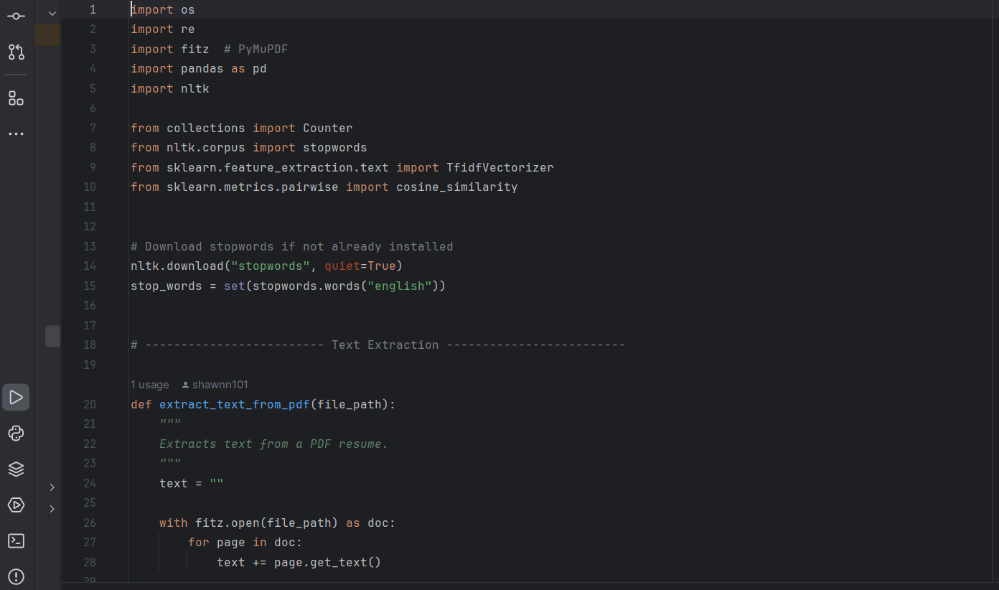

TMU Intramural & Sport
Intramural Tech and Program Lead | May 2025 - May 2026
What I Did & Used
At TMU Intramural & Sport, a lot of my work came from seeing small bottlenecks in the hiring and operations process and building tools to make them easier to handle. I built a Python resume-screening workflow with Pandas and scikit-learn that compared applicants against role requirements, experience, and keyword evidence. It was not meant to replace staff judgment; it gave the team a cleaner first pass so they could spend more time reviewing stronger matches.
A huge portion of the role was also regular department admin work, the kind that keeps programs from getting messy in the background. I helped with file organization, rulebook creation and updates, and entering scores onto the website so teams and staff had current information to work from. I also worked through a database of more than 16,000 users, using Python and Excel to clean up old records and make the data easier to rely on. From there, I built Tableau dashboards that turned participation numbers and program activity into something staff could actually scan and use.
